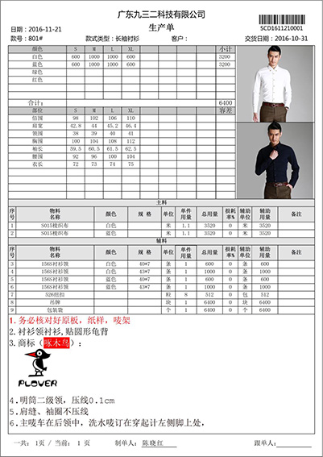
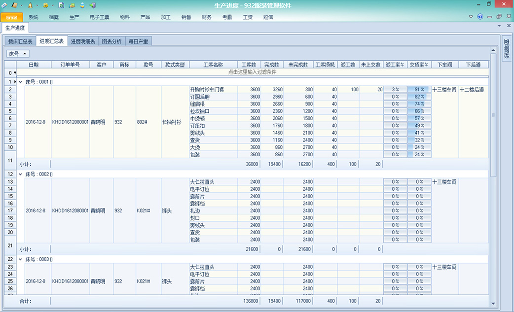
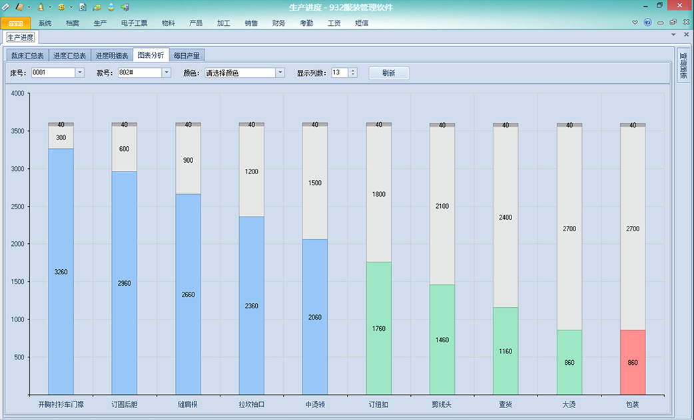
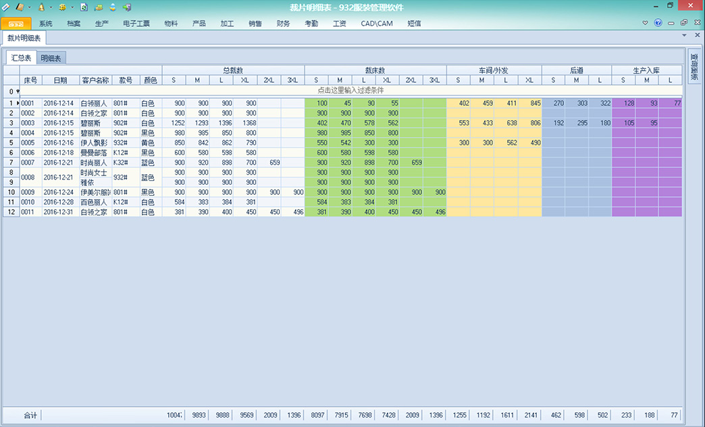
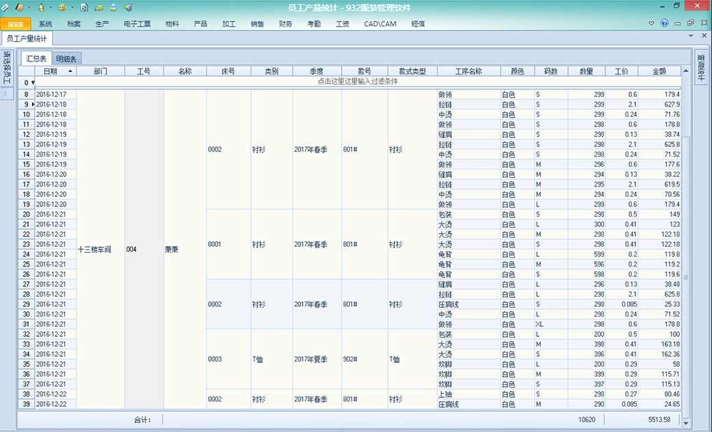
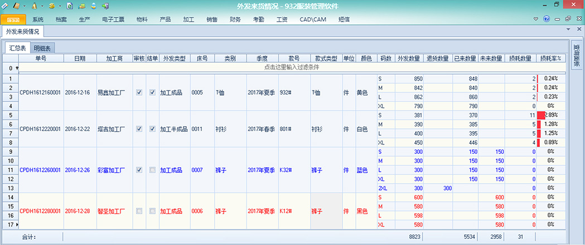
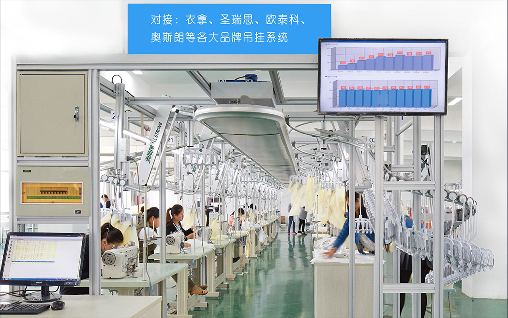
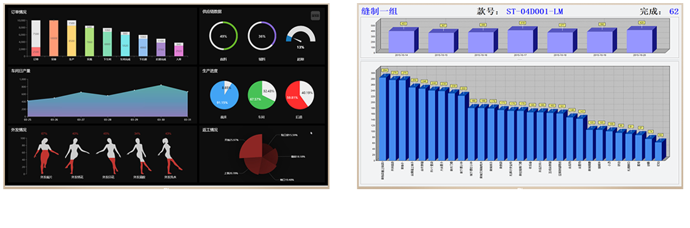
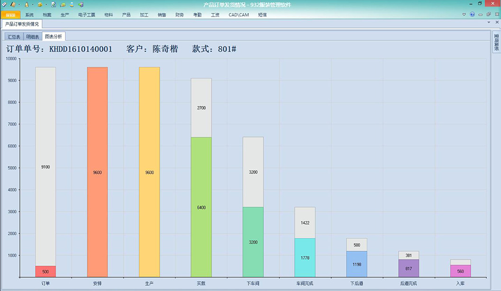

生产单
可选：本厂生产 或 整件外发，软件
自动算出生产这批衣服：需要多少物
料及生成对应的工艺要求。一键打印
生产制造单。
生产进度
实时掌握每床货在：车间、外发、后道的生产进度、每道工序的完成情况、损耗、返工情况。
工序分析
显示对应床号、款号、颜色 每道工序的：完成、未完成、损耗情况。
裁床明细表
清晰体现各床各环节完成进度，方便企业实时了解生产情况，做决策分析更准确更方便。
员工产量统计
实时了解各车间、各组人员每天每道工序的产量、效率、工资，也可以用汇总的方式进行统计。
外发来货情况
支持外发工艺（绣花、印花、洗水等）、工序加工、整件加工模式，明细跟踪各单的进度和损耗情况。
每张外发裁片单：加工什么款式、来了多少、还差多少没回来、损耗了多少、是否超过货期等。
对接吊挂系统
吊挂生产的数据无缝对接到ERP软件,查看生产进度、工价设置、员工产量、工资计算一步到位。
图表分析
订单进度分析
查看客户订单每个款的生产进度：安排数、未安排、裁床完成数、裁床未完成数、已下车间、
未下车间、车间完成、已下后道、未下后道、后道完成、入库数、未入库数、发货数、未发数。
